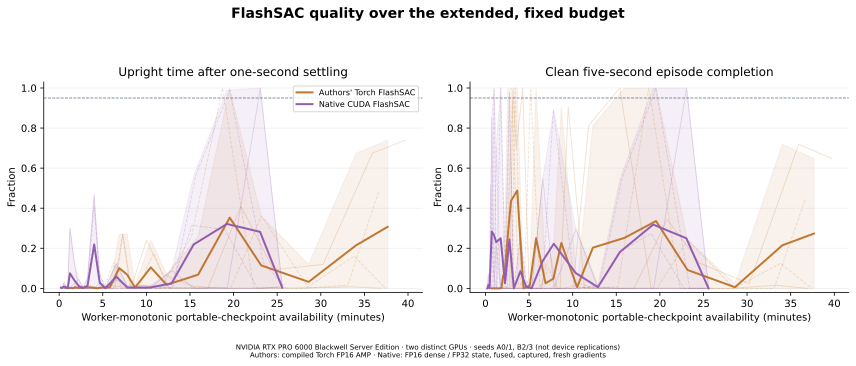
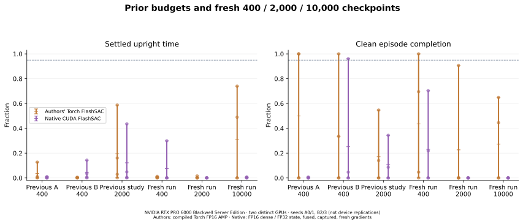
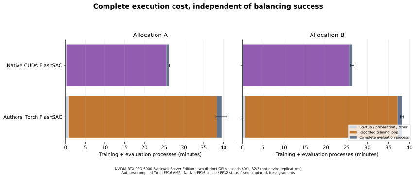
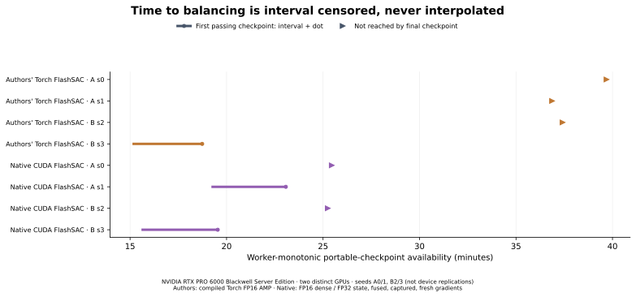

Duration-only learning follow-up · 26 October 2026
Pristine authors' Torch FlashSAC and native CUDA FlashSAC, unchanged recipes, four fresh seeds partitioned over two NVIDIA RTX PRO 6000 Blackwell Server Edition GPU allocations.
Native CUDA FlashSAC used 31.5% less full training-process time than the authors' Torch implementation (median paired ratio; 4/4 matched runs faster). Execution time and successful learning are separate outcomes.
Allocation-specific medians — A: 33.2% less time (2/2 matched runs faster); B: 30.8% less time (2/2 matched runs faster).
Authors' Torch FlashSAC: 0/4 runs passed the balancing gate at 10,000 iterations; 0/4 passed at both 9,000 and 10,000, and 1/4 passed at any saved checkpoint. Mean final settled upright time was 30.73%. All seed outcomes and any later regressions are retained.
Native CUDA FlashSAC: 0/4 runs passed the balancing gate at 10,000 iterations; 0/4 passed at both 9,000 and 10,000, and 2/4 passed at any saved checkpoint. Mean final settled upright time was 0.355%. All seed outcomes and any later regressions are retained.
This study measures learning, not only update throughput. Four disjoint seeds split across two allocations do not establish statistical significance, quality noninferiority or broad hardware generalization.
Each of eight fresh runs trains for 10,000 iterations, 1,024 environments and 16 control steps per iteration: 163,840,000 transitions/run. The recipes match the 2,000-iteration follow-up. This study extends duration and saved-policy checkpoints, partitions four seeds between two GPU allocations, and moves the final replay export to 10,000. Networks, losses, rewards, reset states, physics, action scale, replay capacity 131,072, one-step returns, two critic attempts per eligible vector step and the 12,800-call learning-rate decay remain fixed. The decay is deliberately not stretched with the longer run.
The 22 common evaluations occur at 0, 50, 100, 150, 200, 300, 400, 600, 800, 1,000, 1,200, 1,500, 1,750, 2,000, 2,500, 3,000, 4,000, 5,000, 6,000, 7,500, 9,000 and 10,000 iterations. Every evaluation uses the exact same 128 initial states from the old study. The balancing gate requires 95% clean five-second completion and 95% upright time after one-second settling, with |wrapped pole angle| < 0.2 rad and finite actions. Pole falling does not terminate this task; survival alone is not balancing. Failed first episodes remain failed, and later autoresets never replace them.
| Recipe | Iteration | Gate | Settled upright | Full upright | Clean timeout | Angle RMS(rad) | Episode steps |
|---|---|---|---|---|---|---|---|
| Authors' Torch FlashSAC | 400 | 0/4 | 0.5% | 1.8% | 43.6% | 1.947 | 188.1 |
| Authors' Torch FlashSAC | 2000 | 0/4 | 0.4% | 1.6% | 22.7% | 1.917 | 109.7 |
| Authors' Torch FlashSAC | 10000 | 0/4 | 30.7% | 32.3% | 27.3% | 0.947 | 133.4 |
| Native CUDA FlashSAC | 400 | 0/4 | 7.5% | 8.6% | 23.0% | 1.597 | 111.1 |
| Native CUDA FlashSAC | 2000 | 0/4 | 0.0% | 1.1% | 0.0% | 1.632 | 52.0 |
| Native CUDA FlashSAC | 10000 | 0/4 | 0.4% | 1.9% | 0.0% | 1.472 | 50.4 |
Scalar values are four-seed means; every seed and observed range remains visible below. Angle RMS uses active first-episode steps and must be read with full-budget upright time and survival.
| Recipe | Allocation / seed | First gate iteration | Ever passed | Best iteration | Best upright / completion | Best gate | Final gate | Gate at 9,000 & 10,000 |
|---|---|---|---|---|---|---|---|---|
| Authors' Torch FlashSAC | A / 0 | Not reached | False | 10000 | 74.0% / 64.8% | False | False | False |
| Authors' Torch FlashSAC | A / 1 | Not reached | False | 1750 | 27.2% / 19.5% | False | False | False |
| Authors' Torch FlashSAC | B / 2 | Not reached | False | 6000 | 36.2% / 24.2% | False | False | False |
| Authors' Torch FlashSAC | B / 3 | 5000 | True | 5000 | 100.0% / 100.0% | True | False | False |
| Native CUDA FlashSAC | A / 0 | Not reached | False | 1500 | 46.7% / 8.6% | False | False | False |
| Native CUDA FlashSAC | A / 1 | 9000 | True | 9000 | 99.9% / 100.0% | True | False | False |
| Native CUDA FlashSAC | B / 2 | Not reached | False | 1500 | 41.0% / 25.8% | False | False | False |
| Native CUDA FlashSAC | B / 3 | 7500 | True | 7500 | 98.9% / 100.0% | True | False | False |
Best means the highest saved settled-upright fraction, breaking ties by clean completion, then the earlier checkpoint. This descriptive selection is separate from first passing the frozen gate, passing at the final checkpoint, or passing at both final checkpoints. Every saved checkpoint remains in the curves; a temporary best policy is not sustained success.




| Cohort | Scope | Native lower | Median native/official | Observed range | Every paired seed |
|---|---|---|---|---|---|
| A | training loop seconds | 2/2 | 0.6751 | 0.6479–0.7023 | s0: 0.6479; s1: 0.7023 |
| A | training process seconds | 2/2 | 0.6678 | 0.6411–0.6946 | s0: 0.6411; s1: 0.6946 |
| A | end to end seconds | 2/2 | 0.6653 | 0.6395–0.6912 | s0: 0.6395; s1: 0.6912 |
| B | training loop seconds | 2/2 | 0.6998 | 0.6823–0.7174 | s2: 0.6823; s3: 0.7174 |
| B | training process seconds | 2/2 | 0.6920 | 0.6746–0.7093 | s2: 0.6746; s3: 0.7093 |
| B | end to end seconds | 2/2 | 0.6887 | 0.6718–0.7056 | s2: 0.6718; s3: 0.7056 |
| All four descriptive pairs | training loop seconds | 4/4 | 0.6923 | 0.6479–0.7174 | s0: 0.6479; s1: 0.7023; s2: 0.6823; s3: 0.7174 |
| All four descriptive pairs | training process seconds | 4/4 | 0.6846 | 0.6411–0.7093 | s0: 0.6411; s1: 0.6946; s2: 0.6746; s3: 0.7093 |
| All four descriptive pairs | end to end seconds | 4/4 | 0.6815 | 0.6395–0.7056 | s0: 0.6395; s1: 0.6912; s2: 0.6718; s3: 0.7056 |
A lower ratio means less execution time. The descriptive consistency criterion requires both full-training-process ratios below 1 on each allocation, hence all four overall; it never determines whether results are reported. Lower wall without meeting the balancing gate is not faster successful learning.
| Recipe | Allocation | Seed | 400 upright | 2,000 upright | 10,000 upright | Final gate | Gate at 300 & 400 | Gate at 1,750 & 2,000 | Gate at 9,000 & 10,000 | Train(s) | Train+eval(s) | Completed/attempted(skips) |
|---|---|---|---|---|---|---|---|---|---|---|---|---|
| Authors' Torch FlashSAC | A | 0 | 1.25% | 1.61% | 73.96% | False | False | False | False | 2385.79 | 2457.81 | actor: 159901/159903 (2); critic: 319627/319806 (179); temperature: 159903/159903 (0) |
| Authors' Torch FlashSAC | A | 1 | 0.00% | 0.03% | 0.00% | False | False | False | False | 2215.62 | 2286.87 | actor: 159901/159903 (2); critic: 319624/319806 (182); temperature: 159903/159903 (0) |
| Authors' Torch FlashSAC | B | 2 | 0.50% | 0.01% | 0.00% | False | False | False | False | 2248.95 | 2319.61 | actor: 159903/159903 (0); critic: 319626/319806 (180); temperature: 159903/159903 (0) |
| Authors' Torch FlashSAC | B | 3 | 0.06% | 0.00% | 48.95% | False | False | False | False | 2204.75 | 2274.62 | actor: 159903/159903 (0); critic: 319622/319806 (184); temperature: 159903/159903 (0) |
| Native CUDA FlashSAC | A | 0 | 29.93% | 0.00% | 0.72% | False | False | False | False | 1529.58 | 1571.77 | actor: 159851/159903 (52); critic: 319691/319806 (115); temperature: 159903/159903 (0) |
| Native CUDA FlashSAC | A | 1 | 0.00% | 0.09% | 0.00% | False | False | False | False | 1538.89 | 1580.60 | actor: 159851/159903 (52); critic: 319684/319806 (122); temperature: 159903/159903 (0) |
| Native CUDA FlashSAC | B | 2 | 0.11% | 0.01% | 0.70% | False | False | False | False | 1517.19 | 1558.42 | actor: 159848/159903 (55); critic: 319690/319806 (116); temperature: 159903/159903 (0) |
| Native CUDA FlashSAC | B | 3 | 0.00% | 0.07% | 0.00% | False | False | False | False | 1563.92 | 1605.04 | actor: 159846/159903 (57); critic: 319681/319806 (125); temperature: 159903/159903 (0) |
| Recipe | Allocation | Seed | Environment(s) | Prepare(s) | Loop(s) | Checkpoint(s) | Full replay save(s) | Continuation MB | Metrics IO(s) | Eval process(s) |
|---|---|---|---|---|---|---|---|---|---|---|
| Authors' Torch FlashSAC | A | 0 | 6.85 | 0.00 | 2337.82 | 1.76 | 0.06 | 44.24 | 1.13 | 72.02 |
| Authors' Torch FlashSAC | A | 1 | 6.54 | 0.00 | 2170.26 | 1.67 | 0.06 | 44.24 | 1.13 | 71.25 |
| Authors' Torch FlashSAC | B | 2 | 6.56 | 0.00 | 2201.22 | 1.69 | 0.06 | 44.24 | 1.13 | 70.66 |
| Authors' Torch FlashSAC | B | 3 | 6.56 | 0.00 | 2159.29 | 1.73 | 0.06 | 44.24 | 1.14 | 69.87 |
| Native CUDA FlashSAC | A | 0 | 6.57 | 0.46 | 1514.68 | 2.12 | 0.08 | 44.88 | 1.11 | 42.19 |
| Native CUDA FlashSAC | A | 1 | 6.48 | 0.47 | 1524.08 | 2.12 | 0.08 | 44.88 | 1.12 | 41.71 |
| Native CUDA FlashSAC | B | 2 | 6.89 | 0.48 | 1501.86 | 2.12 | 0.08 | 44.88 | 1.11 | 41.23 |
| Native CUDA FlashSAC | B | 3 | 6.45 | 0.47 | 1549.03 | 2.15 | 0.08 | 44.88 | 1.12 | 41.12 |
| Allocation | First smoke through final evaluation(s) | Worker processes |
|---|---|---|
| A | 8255.53 | 12 |
| B | 8119.57 | 12 |
Each allocation interval excludes installation, source/fixture upload and artifact retrieval. Nested checkpoint/replay/logging costs are not added again to loop/process wall. The two allocations ran on distinct GPUs on the same node; shared-host CPU/storage contention can affect timing. These observations are not controlled clock or independent cold-start measurements.
Both compared recipes use 131,072 replay transitions. The authors' pinned Isaac launcher uses 10,000,000. At 1,024 environments and 60 control steps per simulated second, capacity / (1,024 × 60) gives theoretical windows of 2.13s and 162.76s. This throughput calculation does not reconstruct historical replay age or retention and does not establish the cause of regression. Our one-step returns and fixed 12,800-call decay are intentional frozen settings; the launcher uses three-step returns and defines no Isaac-Cartpole recipe. This is a comparison of the shared adaptation, not a reproduction of the authors' published Cartpole performance.
RoboLearn measured source · Isaac Lab source · Pristine authors' source · Derived audited data · Master study · Allocation A protocol · Allocation B protocol · Execution hashes · Previous Cartpole report
FlashSAC: Donghu Kim and coauthors, Holiday Robotics, Fast and Stable Off-Policy Reinforcement Learning for High-Dimensional Robot Control. RoboLearn and Isaac Lab retain their contributors' authorship and licenses. The previous comparison includes PPO by Schulman and coauthors and stock RSL-RL.